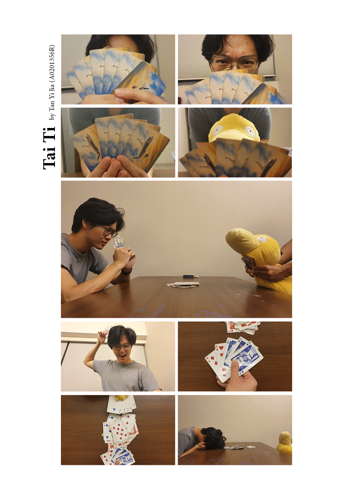

For this assignment, I tell the story of a man losing a game of Tai Ti to his Psyduck through a series of pictures. You can view the final pdf HERE.
Storyboarding
I decided to keep my story simple to be easily and clearly conveyed to an audience through the limited number of frames. However, my target audience would also need to understand the basic rules of Tai Ti (hence the title of the work), or at least the poker card combinations.
First, I visualised how I wanted the story to flow, and converted my thoughts into a storyboard sketch:
Storyboard sketch drawn using my tablet.
I wanted to open the scene with some comedic drama, similar to a standoff: The main character is introduced as he lowers his cards and reveals his intense gaze through an extreme close up shot. This framing adds intensity to the shot as his serious eyes are emphasised. The same is done for the opponent - but that's where the comedic effect comes in. The opponent - upon lowering their cards - is revealed to be a stuffed Psyduck. I love absurdity.
Also, the main character has 6 cards while the Psyduck has 5 (in Tai Ti, the player who clears their hand first wins. This is significant later.)
Shot 5 is meant as an establishing shot to set the scene and is also the most tense moment of the story - where both sides gaze intensely at one another. Hence, a wide shot is used so the viewer can see the setting (two opponents sitting across a table) and context (they are playing cards - Tai Ti, as hinted by the title).
Shot 6 is taken from a low angle to emphasise on the power the main character feels. He is confident of his hand and feels like he's going to win. So in Shot 7 he confidently slams his cards on the table - revealing a 5-card combo: a straight. I intentionally had his hand come from the bottom of the shot so the viewer sees from his perspective, and also used a top-down angle to smoothly transition to the 8th shot - where the Psyduck (opponent, coming from the top and "away" from the viewer) casually plays a full house of 5 cards to win (the main character still has 1 card remaining).
I return again to the wide shot for the final image to signify the end of the action that started in Shot 5; the action begins and ends with the same shot. Furthermore, this wide shot allows me to contrast the Psyduck sitting tall and victorious with the main character's slumped posture of defeat.
Production
After taking a series of shots with my friend as a talent, I used InDesign to put my storyboard and the shots side by side to see which shots would work better for the story flow:
Original storyboard and shortlisted images side by side prior to the critique.
As can be seen, I shortlisted some shots that differed from the storyboard. One notable example was my consideration of whether to include the cards in the middle (see shots 5, 7, 8, and 9). While removing the cards in the middle would place more emphasis on the hands of the two players, it might not make sense as it would seem like the game had just begun. Why would the main character slump his head in a final defeat then?
It was at this point I faced a little roadblock: I wanted to keep the final image seuqnce on the same .ind file as the storyboard and spare images in a portrait orientation. However, the first page is landscape, and hence subsequent pages were also automatically landscape. Thus, I went online and discovered the Pages feature on InDesign, allowing me to create different presets for different pages and hence have different settings for each page:
Using InDesign's Pages tab to make two pages with differing orientations.
So finally, here's the first iteration of the image sequence:
Image sequence prior to the critique.
In the final image series, I intentionally enlarged the 5th shot as I felt it to be the most crucial shot of the sequence - the calm before the storm, the setting of the conflict.
Furthermore, I decided to keep the cards in the middle to show that the game has been going on for quite a while - and it is the last hand of the game.
Post-Critique
During the critique, a few comments were brought up:
- The person holding the Psyduck in the 3rd and 4th frames has the same shirt colour as the main character - making it visually confusing.
- The cards in the middle blend in with the cards being played - hence the viewer's eyes are confused.
- I could consider having the cards played horizontally rather than vertically in the 7th and 8th shots.
I agreed with the first and second points! As for the third suggestion, I decided to keep with my original framing because having the cards played from left and right would not allow the viewer to see the game from the main character's perspective. I wanted the Psyduck to be seen as the "other", for the viewer to see from the main character's point of view how absurd it is to lose to a Psyduck.
As such, I did a re-shoot, and this is the final image sequence:

Final image sequence. You can view the final pdf HERE.
I decided to have the cards played hover above the cards in the middle to put them in focus - not only because they are closer to the camera, but also because the shadow casted on the middle cards creates contrast to the brightness of the cards played.
 "You don't have to wake up early if you don't sleep!"
"You don't have to wake up early if you don't sleep!"